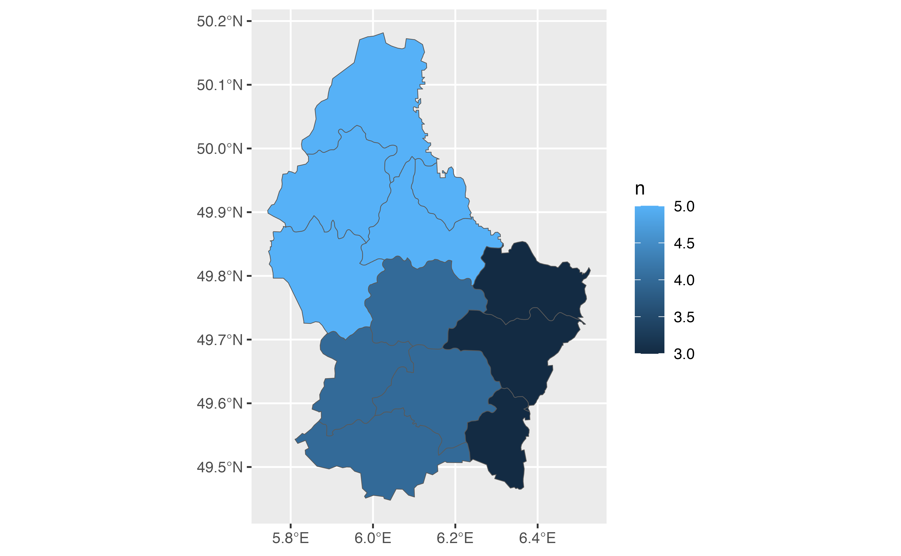

Count the observations in each SpatVector group
Source:R/count-tally-SpatVector.R
count.SpatVector.Rdcount() lets you quickly count the unique values of one or more variables:
df %>% count(a, b) is roughly equivalent to
df %>% group_by(a, b) %>% summarise(n = n()).
count() is paired with tally(), a lower-level helper that is equivalent
to df %>% summarise(n = n()).
Usage
# S3 method for SpatVector
count(
x,
...,
wt = NULL,
sort = FALSE,
name = NULL,
.drop = group_by_drop_default(x),
.dissolve = TRUE
)
# S3 method for SpatVector
tally(x, wt = NULL, sort = FALSE, name = NULL)Arguments
- x
A SpatVector.
- ...
<
data-masking> Variables to group by.- wt
Not implemented on this method
- sort
If
TRUE, will show the largest groups at the top.- name
The name of the new column in the output.
If omitted, it will default to
n. If there's already a column calledn, it will usenn. If there's a column callednandnn, it'll usennn, and so on, addingns until it gets a new name.- .drop
For
count(): ifFALSEwill include counts for empty groups (i.e. for levels of factors that don't exist in the data). Deprecated inadd_count()since it didn't actually affect the output.- .dissolve
logical. Should borders between aggregated geometries be dissolved?
Methods
Implementation of the generic dplyr::count() family functions for
SpatVectors.
tally() will always return a disaggregated geometry while count() can
handle this. See also summarise.SpatVector().
See also
dplyr::count(), dplyr::tally()
Other dplyr verbs that operate on group of rows:
group-by.SpatVector,
rowwise.SpatVector(),
summarise.SpatVector()
Other dplyr methods:
arrange.SpatVector(),
bind_cols.SpatVector,
bind_rows.SpatVector,
distinct.SpatVector(),
filter-joins.SpatVector,
filter.Spat,
glimpse.Spat,
group-by.SpatVector,
mutate-joins.SpatVector,
mutate.Spat,
pull.Spat,
relocate.Spat,
rename.Spat,
rowwise.SpatVector(),
select.Spat,
slice.Spat,
summarise.SpatVector()
Examples
# \donttest{
library(terra)
f <- system.file("ex/lux.shp", package = "terra")
p <- vect(f)
p %>% count(NAME_1, sort = TRUE)
#> class : SpatVector
#> geometry : polygons
#> dimensions : 3, 2 (geometries, attributes)
#> extent : 5.74414, 6.528252, 49.44781, 50.18162 (xmin, xmax, ymin, ymax)
#> coord. ref. : lon/lat WGS 84 (EPSG:4326)
#> names : NAME_1 n
#> type : <chr> <int>
#> values : Diekirch 5
#> Luxembourg 4
#> Grevenmacher 3
p %>% count(NAME_1, sort = TRUE)
#> class : SpatVector
#> geometry : polygons
#> dimensions : 3, 2 (geometries, attributes)
#> extent : 5.74414, 6.528252, 49.44781, 50.18162 (xmin, xmax, ymin, ymax)
#> coord. ref. : lon/lat WGS 84 (EPSG:4326)
#> names : NAME_1 n
#> type : <chr> <int>
#> values : Diekirch 5
#> Luxembourg 4
#> Grevenmacher 3
p %>% count(pop = ifelse(POP < 20000, "A", "B"))
#> class : SpatVector
#> geometry : polygons
#> dimensions : 2, 2 (geometries, attributes)
#> extent : 5.74414, 6.528252, 49.44781, 50.18162 (xmin, xmax, ymin, ymax)
#> coord. ref. : lon/lat WGS 84 (EPSG:4326)
#> names : pop n
#> type : <chr> <int>
#> values : A 5
#> B 7
# tally() is a lower-level function that assumes you've done the grouping
p %>% tally()
#> class : SpatVector
#> geometry : polygons
#> dimensions : 1, 1 (geometries, attributes)
#> extent : 5.74414, 6.528252, 49.44781, 50.18162 (xmin, xmax, ymin, ymax)
#> coord. ref. : lon/lat WGS 84 (EPSG:4326)
#> names : n
#> type : <int>
#> values : 12
p %>%
group_by(NAME_1) %>%
tally()
#> class : SpatVector
#> geometry : polygons
#> dimensions : 3, 2 (geometries, attributes)
#> extent : 5.74414, 6.528252, 49.44781, 50.18162 (xmin, xmax, ymin, ymax)
#> coord. ref. : lon/lat WGS 84 (EPSG:4326)
#> names : NAME_1 n
#> type : <chr> <int>
#> values : Diekirch 5
#> Grevenmacher 3
#> Luxembourg 4
# Dissolve geometries by default
library(ggplot2)
p %>%
count(NAME_1) %>%
ggplot() +
geom_spatvector(aes(fill = n))
# Opt out
p %>%
count(NAME_1, .dissolve = FALSE, sort = TRUE) %>%
ggplot() +
geom_spatvector(aes(fill = n))

# }